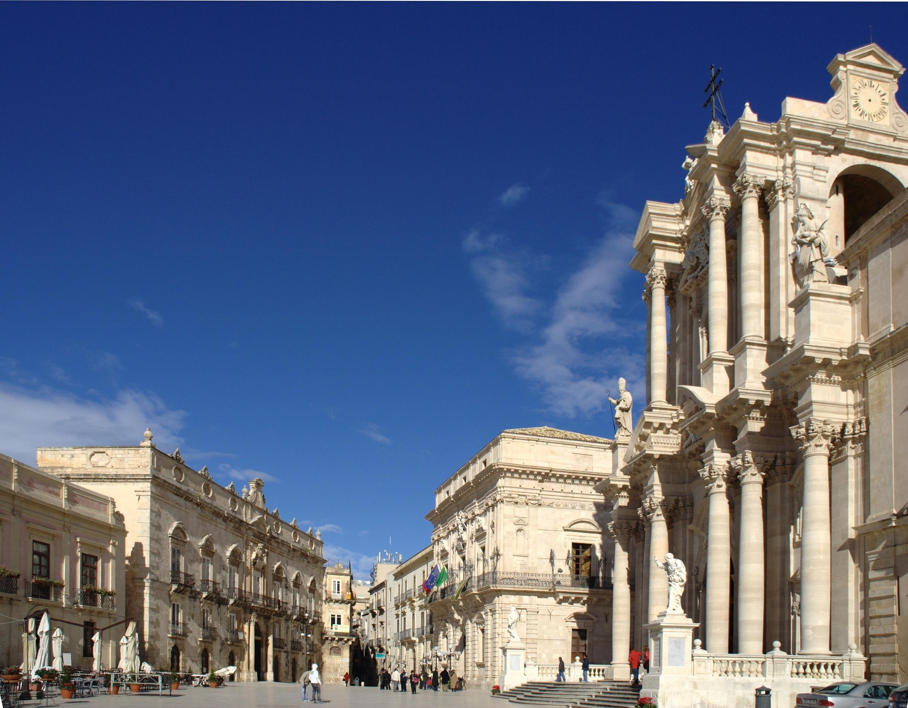
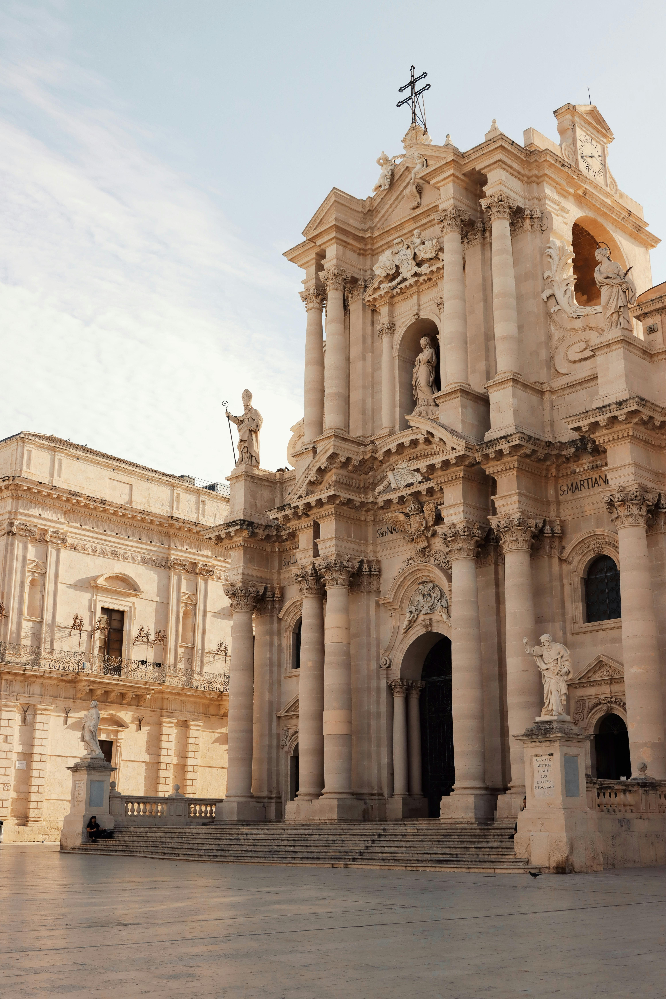
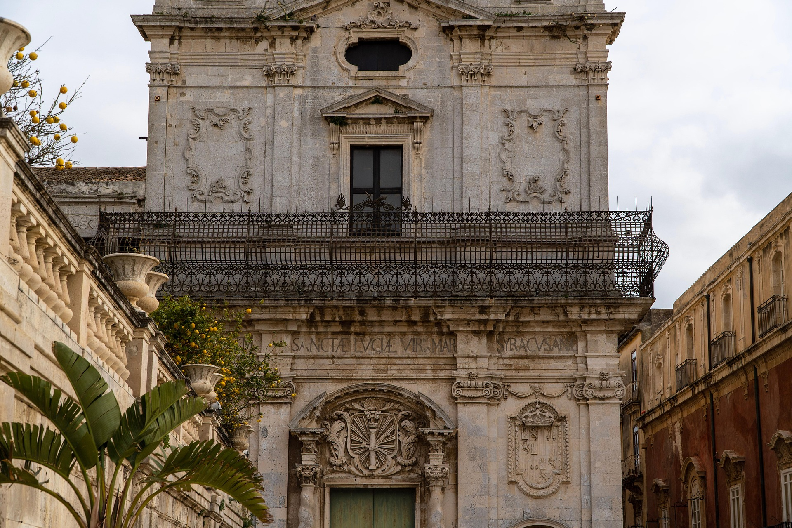
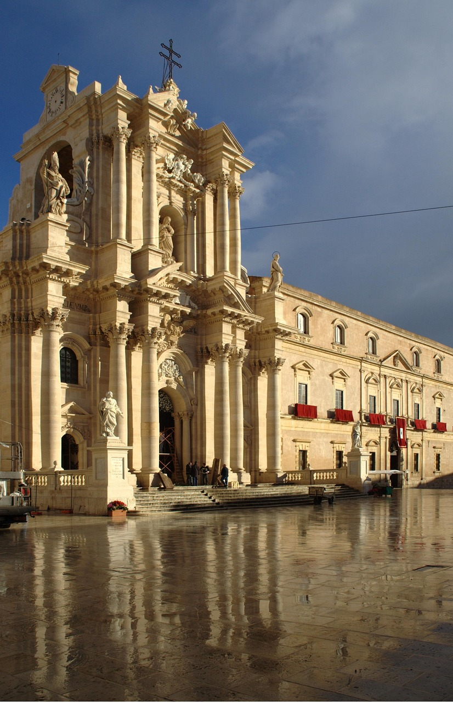
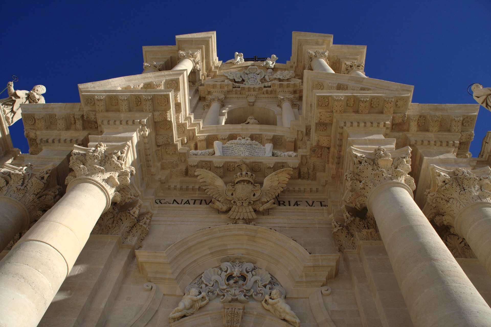
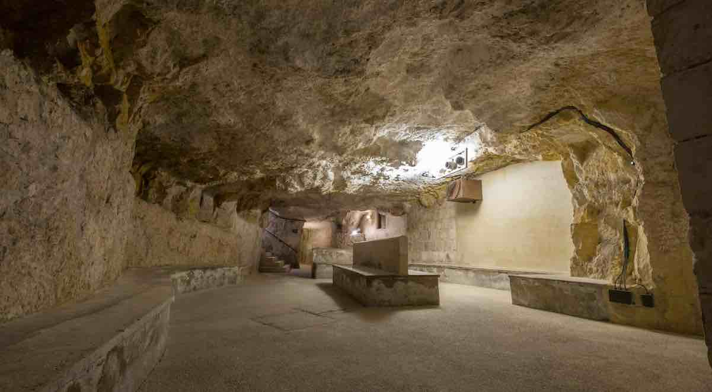

SIRACUSA

Piazza Duomo, Siracusa
Piazza Duomo è il cuore splendente di Ortigia, un salotto di pietra bianca dove il tempo sembra essersi fermato. Sorta sulle fondamenta dell'antica acropoli, questa piazza è il manifesto della rinascita barocca dopo il terribile terremoto del 1693. Qui, tra la maestosità della Cattedrale della Natività di Maria Santissima e i palazzi nobiliari che la circondano, si respira l'essenza di Siracusa: un incrocio millenario tra sacro e profano, tra potere civile e devozione religiosa.
La storia della Piazza
Piazza Duomo, fin dall'antichità venne identificata come l'area sacra della città. Qui sorse il primo edificio di culto (oikos) fondato dai siracusani tra la fine del VIII sec. e l'inizio del VII sec. a.C. Successivamente sorse il primo tempio ionico, fatto costruire dalla ricca aristocrazia locale ispirandosi ai templi dell'Asia Minore.
Sebbene l'edificio non venne mai portato a compimento, accanto ad esso sorse il Tempio dedicato ad Atena, i cui resti sono ancora oggi visibili, inglobati nelle moderne strutture murarie della Cattedrale della Natività di Maria Santissima. Eretto per volere del tiranno Gelone in memoria della vittoria sui Cartaginesi, venne costruito in stile dorico utilizzando la pietra locale come materiale da costruzione.
I Protagonisti della Piazza
Il Duomo di Siracusa,
più che un edificio, la Cattedrale è un palinsesto di storia millenaria. Nel V secolo a.C., il tiranno Gelone eresse un maestoso tempio dorico dedicato ad Atena per celebrare la vittoria sui Cartaginesi. Nel VII secolo d.C., quelle stesse colonne greche furono inglobate in nuove mura per trasformare il tempio in una basilica cristiana. A coronare questo capolavoro è la facciata settecentesca, ricostruita dopo il terremoto del 1693 in stile barocco.
Palazzo Arcivescovile,
fatto costruire nel 1618 all'architetto Andrea Vermexio, e più volte rimaneggiato nel Sette e Ottocento, fino ad assumere l'attuale aspetto neoclassico. All'interno del Palazzo è conservata una cappella, dove è ospitato il Tesoro della Cattedrale, che era parte di una preesistente struttura architettonica di epoca sveva.
Chiesa di Santa Lucia alla Badia,
icon la sua elegante e scenografica facciata in stile Barocco e Rococò, chiude l'area della Piazza verso Via Pompeo Picherali.
Palazzo Senatorio,
sorge alla sinistra del Duomo, è sede del Municipio. L'edificio fu commissionato nel 1629. Si caratterizza per il rigore geometrico e la linearità volumetrica, di stile Neoclassico.





Curiosità
L’ipogeo di Piazza Duomo:
Sotto il pavimento della piazza si snoda un percorso sotterraneo che servì come rifugio antiaereo durante la Seconda Guerra Mondiale. Collega la piazza direttamente con la Marina (il mare)
La Piazza d’oro:
Hai notato che la piazza sembra quasi brillare? È merito della pietra giuggiulena (una qualità di pietra calcarea locale). Al tramonto, la pietra assorbe i raggi del sole e la piazza cambia colore, passando dal bianco latte a un giallo oro intenso

